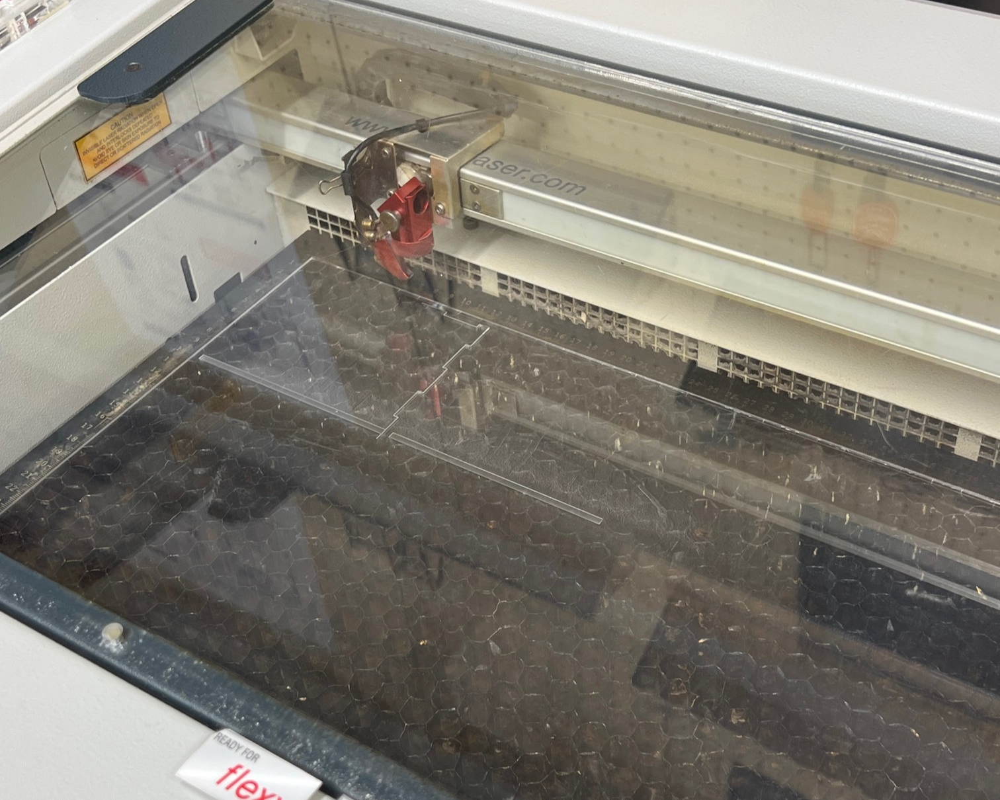
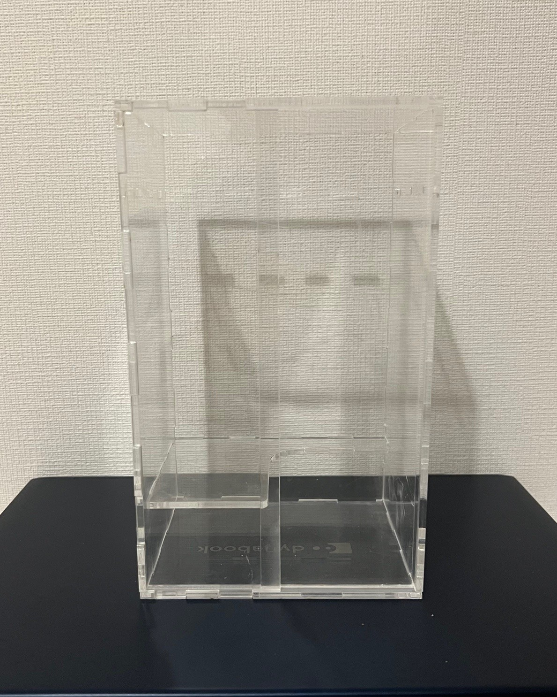
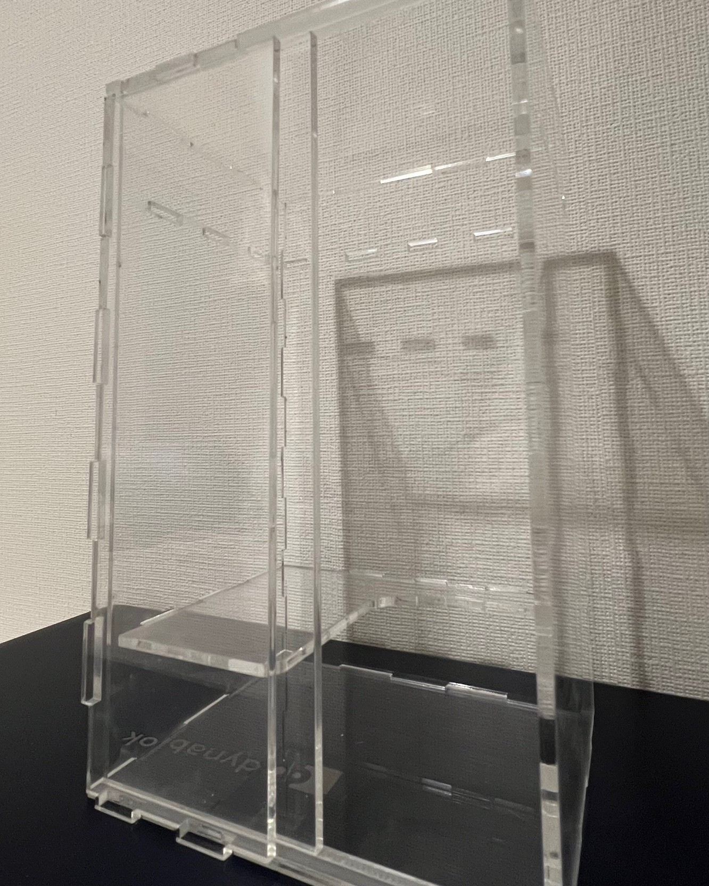
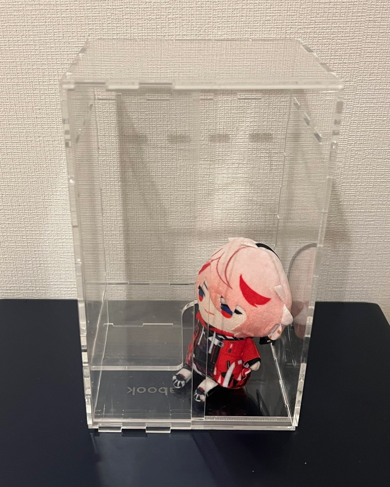
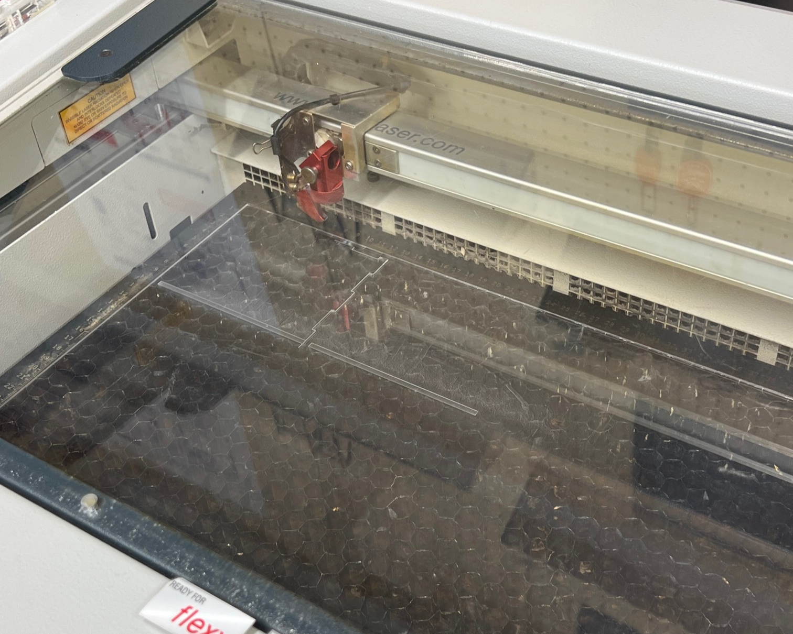
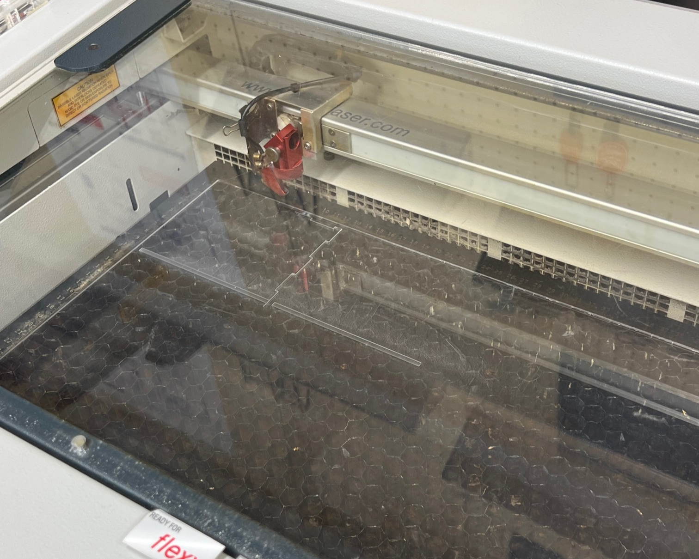

デジタルファブリケーション 第４回
Design for Others
《 製作構想 》
≪ 私たちの班がPick upした記憶に残った人物の特徴と当時の状況 ≫ 時間：平日の深夜
場所：公園の隅
人物：スーツを着た40～50代の男性
行動：飲酒しながらビデオ通話（おそらく友人との電話）
感情：ずっと大声で笑っていて楽しそう
≪ 共感マップ ≫
声の大きさや会話の内容、
そもそも友人と電話することを気にせずに楽しめる場所がない？
寂しい？
楽しみがこれしかない？
癒しが欲しい？
≪ HMW ≫
どうすれば居場所をつくれる？
どうすれば楽しみを見出してもらえる？
どうすれば寂しさをなくすことができる？
どうすれば子供の頃に戻れるか？
⇨居場所(自分を解放できる空間、秘密基地のような空間)、
癒しや楽しみが必要！！
⇨私はその中でも居場所を選択
・1人で騒いでいても他人に迷惑をかけない個室を作りたい。
↳駅などに設置してあるワークスペースが私が考えている案にぴったり！
《 製作過程 》

箱を作る際は
こちら
のサイトを利用。
《 完成品 》
  
≪ サイズ ≫ 間口 16㎝、奥行 10cm、高さ 20cm(実際の想定サイズはこの部屋のサイズの10倍)
・床に座って胡坐をかくような感じ（その方が家のような感じで落ち着けると感じたため。）
・テーブルの上にスマホスタンドを置くことを想定しているため、電話中に両手が空く。
・実際はヨギボーを置く予定である。その上に座る。
・天井から30㎝の高さに荷物置きを作る予定。（であったが、カットした際に幅が合わなかった、、、）
 
